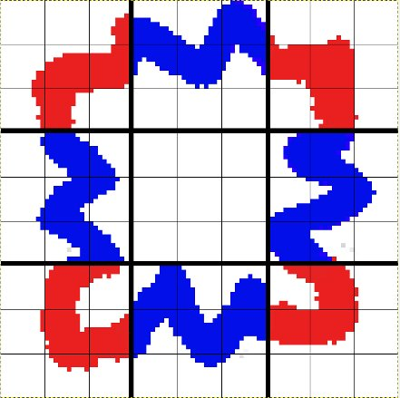

Создание элементов со сглаженными углами
С помощью нового CSS3 свойства border-radius Вы можете делать углы элементов сглаженными.
#cir1 { border-radius: 15px; }
#cir2 { border-radius: 4px; }
Данное свойство может применяться не ко всем углам элемента, а только к определенным:
- border-top-left-radius делает сглаженным только верхний левый угол элемента;
- border-top-right-radius делает сглаженным только верхний правый угол элемента;
- border-bottom-left-radius делает сглаженным только нижний левый угол элемента;
- border-bottom-right-radius делает сглаженным только нижний правый угол элемента.
border-top-left-radius: 20px; border-bottom-right-radius: 20px;
Добавление к элементам тени
С помощью свойства box-shadow Вы можете добавлять к элементам страницы тени.
Добавляя тени к элементам Вы делаете дизайн страницы более "естественным" (то есть имитирующим реальный мир так как объекты в нем отбрасывают тени).
Тень может быть внешней и внутренней. Внешние тени создают эффект приподнятости элемента над остальным содержимым, а внутренние создают эффект вдавленности элемента.
box-shadow: 6px 6px 6px 2px black;
Установка цвета границы
Обратите внимание: данное свойство на данный момент поддерживается только браузером Mozilla Firefox.
С помощью нового CSS3 свойства border-colors Вы можете регулировать цвет каждого пикселя границы.
-moz-border-top-colors: #FF0000 #EB1010 #D22E2E #B03E3E;
Вставка изображений в качестве границы
В CSS3 было добавлено новое свойство border-image позволяющее вставлять произвольные изображения в качестве границы элемента.
Синтаксис:
border-image: путь(1) отступ(2) ширина(3) повторение(4);
Для того, чтобы сделать это необходимо:
1. Указать путь к изображению-границе;
2. Указать величину отступа от каждого края изображения для того, чтобы разрезать изображения на 9 частей (верхний левый угол, верхняя сторона, верхний правый угол, левая сторона и т.д.);

В данном примере величина отступа установлена равной 30px с каждой стороны изображения (размер клетки равен 10x10 пикселей).
Черными линиями проиллюстрировано как будет в итоге разрезано изображение.
Углы и стороны специально выделены разными цветами, чтобы Вы легко могли опознать их в примере далее.
3. Указать ширину границы в пикселях;
4. Указать должно ли изображение повторяться (repeat), округляться (round) или растягиваться (stretch), чтобы заполнить границу элемента.